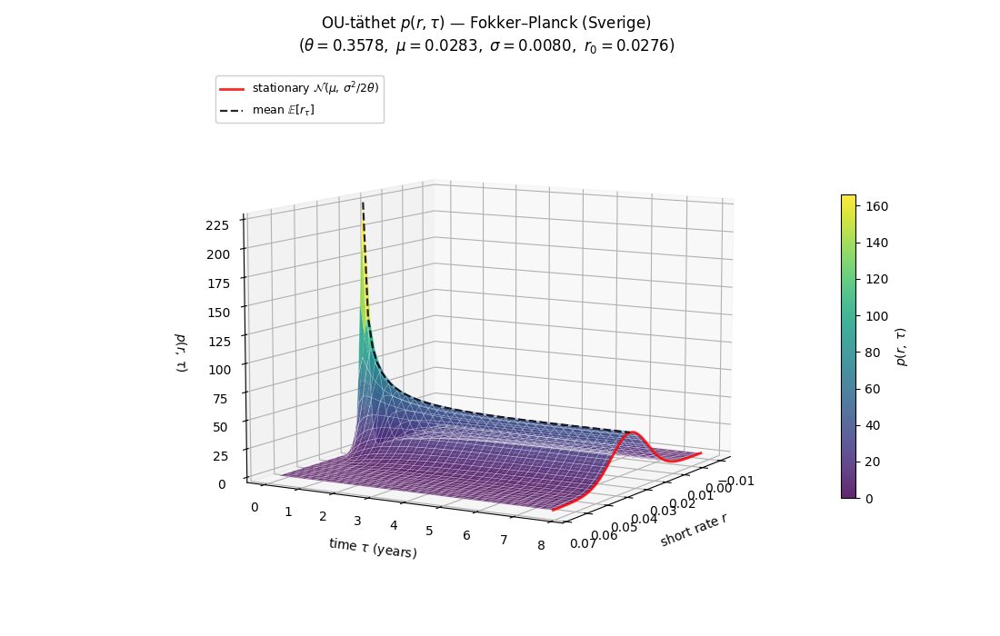
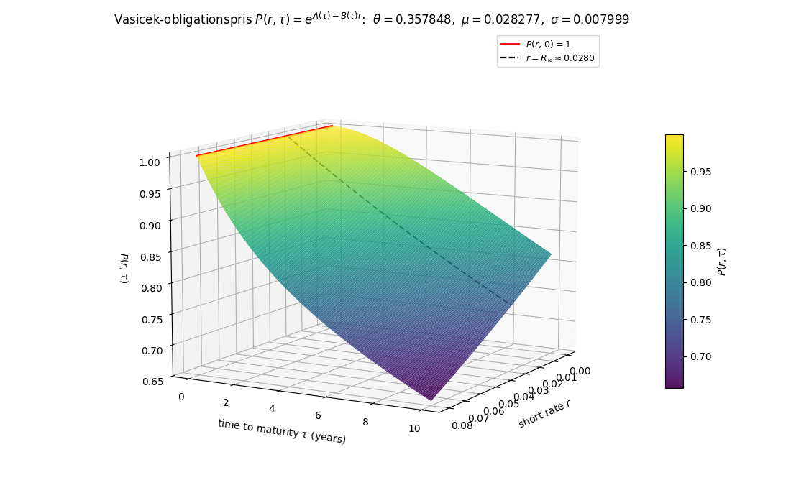
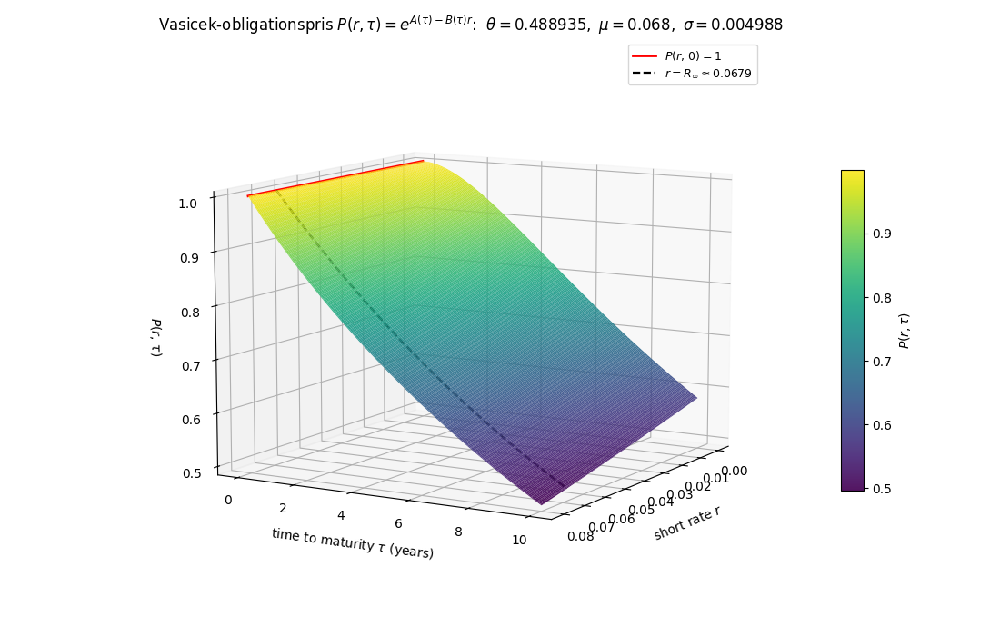
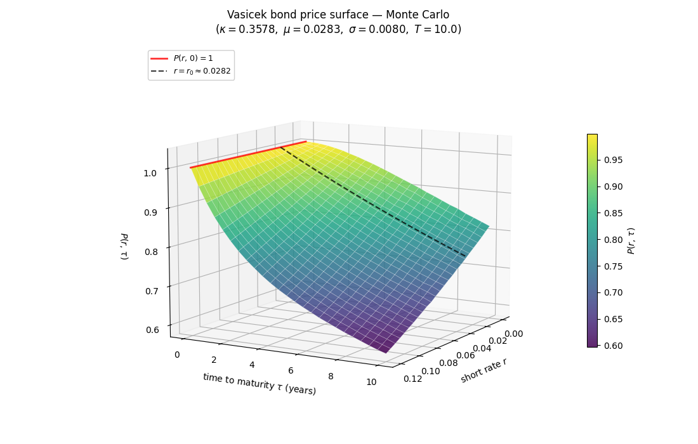
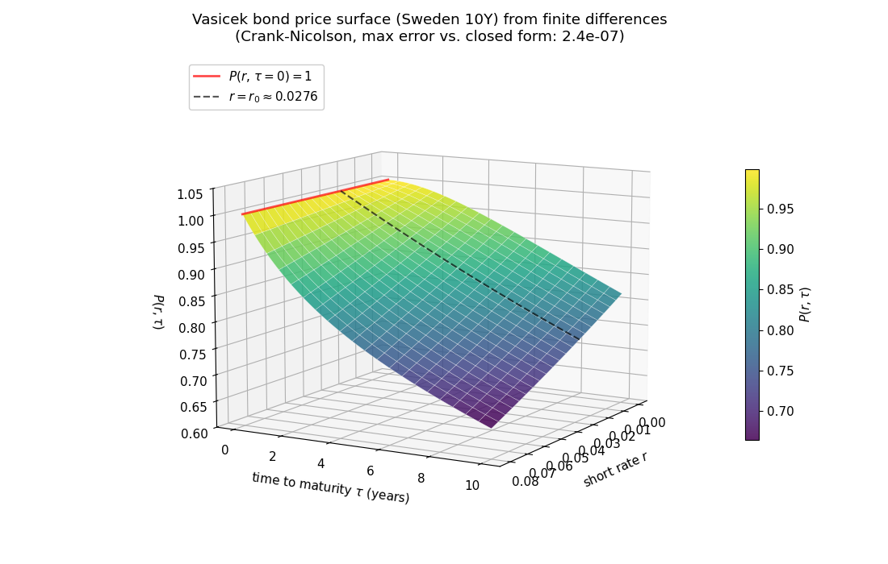
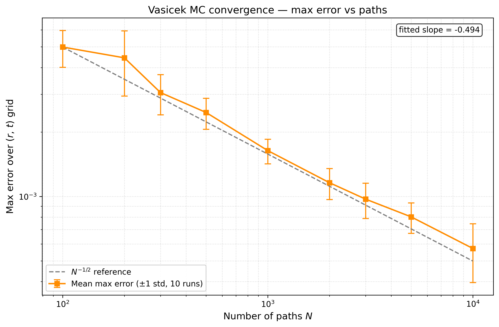
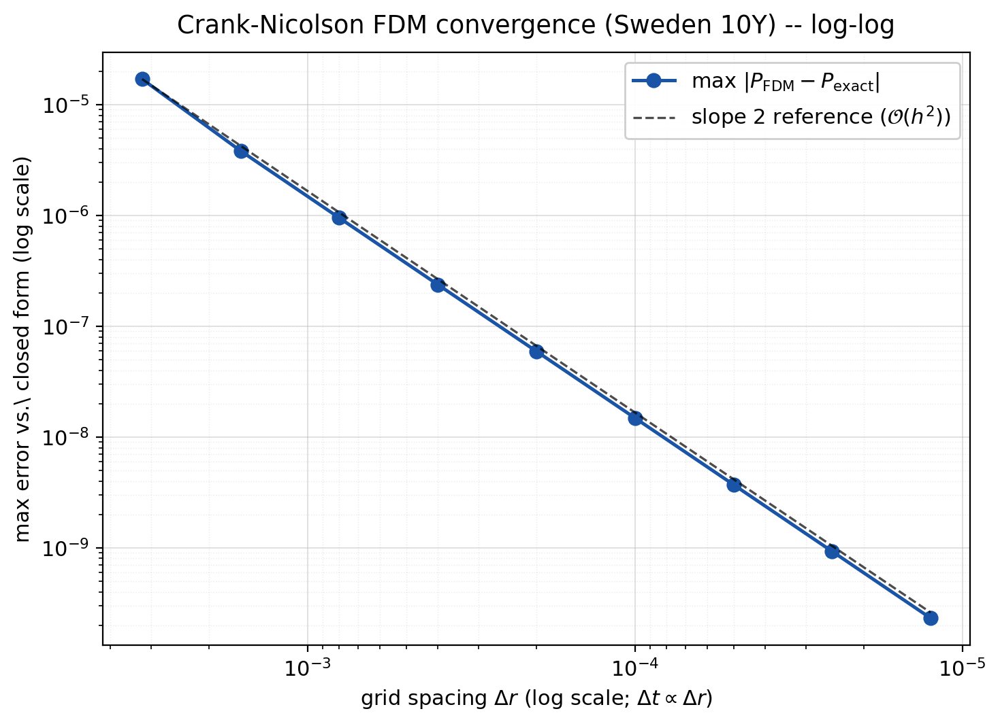

En statsobligation är ett lån till staten där investeraren betalar ett pris idag och får tillbaka ett bestämt belopp vid förfallodatumet T, oftast tillsammans med löpande ränteutbetalningar (kuponger) under tiden. I det här projektet studerar vi det enklaste fallet, en nollkupongsobligation som bara betalar ut beloppet vid förfall. Priset P(r, τ) beror på räntan r och hur lång tid som är kvar till förfall, τ = T−t.
Räntan spelar roll eftersom investeraren alltid har ett alternativ: att istället sätta in pengarna på ett riskfritt bankkonto, som växer med den riskfria räntan r. För att en obligation ska vara värd att köpa måste den ge minst lika mycket som banken, annars skulle ingen välja den. Priset idag motsvarar alltså det belopp man skulle behöva sätta in på banken nu för att vid tid T ha exakt det utlovade beloppet. Ju högre ränta och ju längre tid kvar till förfall, desto lägre pris.
Problemet är att räntan ändrar sig hela tiden och vi vet inte vad den blir i framtiden. Eftersom statsobligationer handlas för enorma belopp på världens marknader är det viktigt att kunna prissätta dem korrekt, små prisfel får stora konsekvenser för både investerare och stat.
Aktiekurser kan oftast modelleras som en geometrisk Brownsk rörelse. En aktie saknar naturlig nivå att återvända till, det finns ingen ekonomisk mekanism som drar priset mot ett specifikt värde, eftersom aktiens "rätta" nivå i sig förändras med bolagets framtida kassaflöden.
Den korta räntan delar grundidén att rörelser kan beskrivas med en stokastisk term driven av en Brownsk rörelse, men skiljer sig på en avgörande punkt: den har en naturlig nivå att återvända till. Empiriskt rör sig räntor tillbaka mot en långsiktig nivå istället för att driva iväg. Detta beror på penningpolitiken — centralbanker som Riksbanken och ECB har explicita inflationsmål (oftast två procent) och styr den korta räntan för att hålla inflationen nära målet. Det är denna egenskap, mean reversion, som gör Ornstein–Uhlenbeck-processen till en naturlig utgångspunkt.
$$dr_t = \kappa(\theta - r_t)\,dt + \sigma\,dW_t$$
Parametrarna diskuteras mer i detalj nedan, men det centrala man kan utläsa direkt är att förändringen i räntan på ett kort tidssteg är proportionell mot avståndet $(\theta - r_t)$ mellan nuvarande räntan och den långsiktiga nivån. Är vi långt under $\theta$ blir driften positiv och räntan dras uppåt; är vi långt över blir den negativ och räntan dras nedåt. Konstanten $\kappa > 0$ styr hur snabbt återgången sker.
Denna modellering av räntan låter oss härleda en partiell differentialekvation för obligationspriset $P(r,t)$ som sedan kan lösas på flera sätt. Vi löser den först analytiskt med en smart ansats, sedan med Monte Carlo-simuleringar och slutligen med finita differensmetoden över ett rutnät.
Den analytiska obligationsytan stämmer väl med FDM-lösningen, vilket validerar numeriken. Ländernas skilda parametrar speglar deras räntemiljöer. Projektet illustrerar hur analytisk teori och numeriska metoder kompletterar varandra — från Brownsk rörelse till prissättning av räntederivat.
Ornstein–Uhlenbeck-processen beskrivs av en stokastisk differentialekvation med två delar. Driftstermen θ(μ − Xt) är proportionell mot avståndet till jämviktsnivån μ och drar processen tillbaka mot μ med en hastighet som bestäms av θ. Diffusionstermen σ dWt tillför slumpmässiga störningar via en Brownsk rörelse, med amplitud skalad av σ. För varje fixt t är Xt normalfördelad: väntevärdet närmar sig μ exponentiellt och variansen växer mot ett stationärt värde σ²/(2θ), oberoende av startvärdet. Processen fluktuerar därför kring μ utan att driva iväg, en egenskap som kallas mean reversion. Detta gör OU-processen lämplig för att modellera storheter med en stabil långsiktig nivå, exempelvis räntor.
Den tillhörande Fokker–Planck-ekvationen för tätheten p(x,t) är
Xt: processens värde vid t. X0 = x0: begynnelsevärde. θ: återgångshastighet. μ: långsiktigt medelvärde. σ: brusets styrka. Wt: Brownsk rörelse.

Data. Vasicek-modellen är formulerad i termer av korta räntan rt som beskriver den nuvarande räntenivån för lån med bestämd löptid dt. Vi approximerar den med veckovisa stängnings avkastningen i perioden 2020-2026 för 10-år långa statsobligationer utgivna av svenska respektive indiska staten, hämtade från investing.com. Tidsserierna {rk} har tidssteg Δt ≈ 7 dagar och uttrycks i procent per år. Länderna är valda för att representera två olika räntemiljöer
Skattning. Vid jämna tidssteg Δt följer OU-processens samplade värden {rk} exakt en autoregressiv process av ordning ett, alltså är varje nytt värde är en linjär funktion av det föregående plus en oberoende gaussisk slumpterm:
Koefficienterna (α, β, s²) skattas via minsta-kvadratmetoden: vi minimerar Σk (rk+1 − α − βrk)2 i α och β, och tar s² som stickprovsvariansen av residualerna εk. De tidskontinuerliga Vasicek-parametrarna (θ, μ, σ) återfås sedan genom inversion av transition density-sambanden:
För Sverige hittar vi θ ≈ 0,358, μ ≈ 2,83 %, σ ≈ 0,80 %, och för Indien θ ≈ 0,489, μ ≈ 6,80 %, σ ≈ 0,50 %. Dessa kalibrerade värden används som indata i de efterföljande Monte Carlo- och FDM-experimenten.
En riskfri investering växer med den kortfristiga räntan rs. Vid fast ränta gäller Bt = ert, men med stokastisk ränta generaliseras detta till en integrerad tillväxtfaktor:
Bankkontot tjänar som numeraire — alla priser uttrycks relativt Bt.
Vasicek antar att korträntan rt följer en OU-process under det riskneutrala måttet Q. Parametern θ styr återgångshastigheten, μ är det långsiktiga jämviktsläget och σ är volatiliteten:
Under Q är driften justerad för marknadens riskpremie via Girsanov-satsen.
Finansens fundamentalsats (FTAP) säger att i en arbitragefri marknad finns ett riskneutralt mått Q under vilket alla diskonterade tillgångspriser är martingaler. Priset på en nollkupongsobligation med förfall T ges därmed av det Q-diskonterade väntevärdet av utbetalningen, betingat på nuvarande information:
Betingningen förenklas till rt tack vare Markov-egenskapen hos OU-processen.
Feynman–Kac-satsen kopplar stokastiska väntevärden till deterministiska PDE:er. Definiera u(t,r) = P(t,T) med rt = r. Satsens tillämpning på steg 3 ger att u löser bakåt-PDE:n med diskonteringsterm −ru:
med terminalvillkor u(T,r) = 1 (obligationen löses in till 1 kr).
Koefficienter från OU-modellen: drift a(r) = θ(μ−r) och diffusion b = σ². Insättning i Feynman–Kac ger den slutliga Vasicek-PDE:n som obligationspriset P måste uppfylla:
Denna PDE löses analytiskt via en exponentiellt-affin ansats, se nedan.




Ansats. Affin drift och diffusion ger
ODE-system. Insättning i Vasicek-PDE ger
Lösning. Med τ = T−t, R∞ = μ − σ²/(2θ²):
Vi kör Monte Carlo-metoden för ett antal olika N = [100, 200, 300, 500, 1 000, 2 000, 3 000, 5 000, 10 000] och beräknar max-felet över hela nätet jämfört med den analytiska lösningen. Eftersom Monte Carlo är stokastisk tar vi medelvärdet av max-felet över 10 oberoende simulationer för varje N. RMS-felet kan användas för en mindre pessimistisk uppskattning. I en log-log-plot ser vi att lutningen är −½, vilket ger konvergensordning ½.

FDM-lösaren körs på en sekvens rutnät där Δr och Δt halveras successivt. Log-log-diagrammet följer slope-2-referensen tätt, från ≈ 10⁻⁵ (grovt) till ≈ 10⁻⁹ (fint), vilket bekräftar 𝒪(h²)-konvergens.
